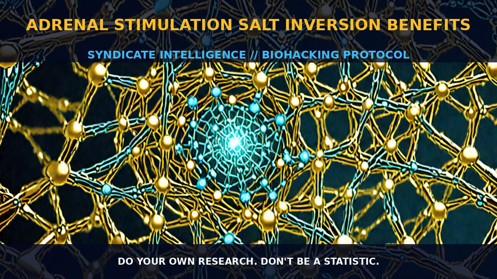

Adrenal Stimulation Salt Inversion Benefits

ADRENALSTIMULATIONSALTINVERSIONBENEFITS
MECHANICS
AdrenalStimulationSaltInversionBenefits (ASSIB) refers to the practice of using a combination of salt and adrenal stimulators to modulate the body's stress response and enhance cognitive and physical performance. The salt component, often in the form of sodium chloride, plays a crucial role in maintaining the body's electrolyte balance, which is essential for neuronal function and overall cellular health. Sodium chloride is critical for the proper functioning of the nervous system, as it helps to maintain the fluid balance necessary for the transmission of nerve impulses. This is achieved through the action of sodium channels, which are integral to the generation and propagation of action potentials in neurons.
Adrenal stimulators, such as compounds like caffeine and ephedrine, work by activating the sympathetic nervous system. Ephedrine, for instance, is an adrenergic agonist that binds to alpha and beta-adrenergic receptors, increasing heart rate and blood pressure, while also stimulating the release of catecholamines such as adrenaline and noradrenaline. These catecholamines enhance the body's response to stress, improving alertness, cognitive function, and physical performance. The adrenal gland, in response to these stimulators, releases glucocorticoids, which play a key role in regulating metabolic processes and maintaining homeostasis.
The combination of salt and adrenal stimulators creates a synergistic effect, enhancing the body's ability to manage stress and improve cognitive performance. The salt ensures that the neural pathways are optimally hydrated and electrically active, while the adrenal stimulators increase the availability of neurotransmitters necessary for cognitive function. This dual action provides a robust framework for maintaining optimal cognitive and physical performance.
BIOLOGICAL LEVERAGE
The biological leverage of ASSIB lies in its ability to enhance cognitive and physical performance through modulation of the sympathetic nervous system and electrolyte balance. The sympathetic nervous system is the body's "fight or flight" response system, which is activated in response to stress. Activation of this system is achieved through the binding of stimulants like ephedrine to adrenergic receptors, leading to the release of catecholamines such as adrenaline and noradrenaline. These neurotransmitters increase heart rate, blood pressure, and metabolic rate, enhancing alertness and cognitive function.
Electrolytes, particularly sodium chloride, are essential for maintaining the proper functioning of the nervous system. Sodium channels in neurons are crucial for the generation and propagation of action potentials. When the body is optimally hydrated and the electrolyte balance is maintained, the nervous system operates more efficiently, leading to improved cognitive function and enhanced performance. The salt component in ASSIB ensures that the neurons are well hydrated and electrically active, thereby facilitating the rapid transmission of nerve impulses.
Moreover, the adrenal stimulators in ASSIB promote the release of glucocorticoids, which play a critical role in regulating metabolic processes and maintaining homeostasis. Glucocorticoids help to manage the body's response to stress by increasing the availability of glucose and amino acids, which are essential for maintaining energy levels and supporting cognitive function. This, in turn, enhances the body's ability to cope with stress and improve cognitive performance. The combination of salt and adrenal stimulators creates a synergistic effect, enhancing the body's ability to manage stress and improve cognitive and physical performance.
TACTICAL IMPLEMENTATION
Implementing ASSIB involves the careful selection of adrenal stimulators and the appropriate use of salt to maintain electrolyte balance. For adrenal stimulators, low-to-moderate amounts of ephedrine, typically in the range of 20-50 mg per dose, can be used to achieve the desired effects. Caffeine, which is a well-known adrenergic agonist, can also be included in the regimen, with dosages of 100-200 mg per dose. These stimulants should be taken at intervals to ensure sustained performance without overwhelming the system.
The use of salt, specifically sodium chloride, should be monitored to maintain proper electrolyte balance. A moderate intake of salt, approximately 2-5 grams per day, is generally sufficient to support optimal neural function. This can be achieved through dietary intake or supplementation. Timing the intake of salt and adrenal stimulators is crucial for effectiveness. For instance, consuming salt and stimulants in the morning can provide a sustained boost in cognitive and physical performance throughout the day.
Stacking ASSIB with other nootropics can further enhance its benefits. For example, combining ASSIB with creatine can improve energy supply to neurons, supporting cognitive function. Similarly, incorporating adaptogens like cordyceps sinensis can help to normalize the HPA axis and integrate immune, metabolic, and neuroendocrine responses, leading to better overall stress management. These combinations can be tailored based on individual needs and goals.
Do your own research. Don't be a statistic.
Prostar Life Hack
Caffeine, which is a well-known adrenergic agonist, can also be included in the regimen, with dosages of 100-200 mg per dose.
[ AUTHOR: LEAD TECHNICAL RESEARCHER ]